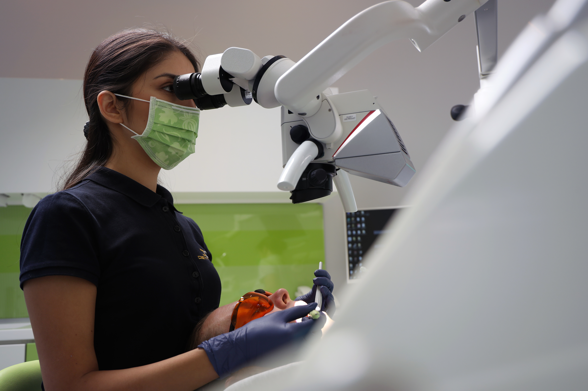
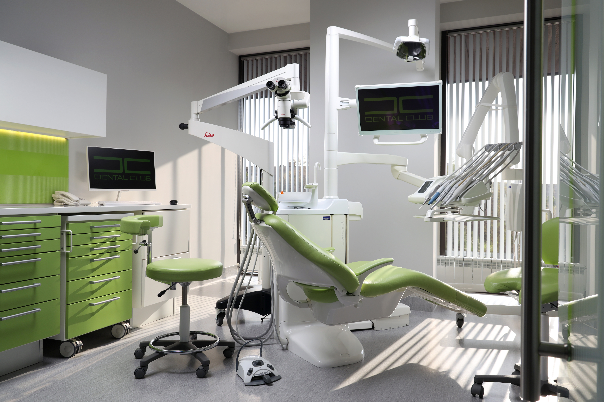
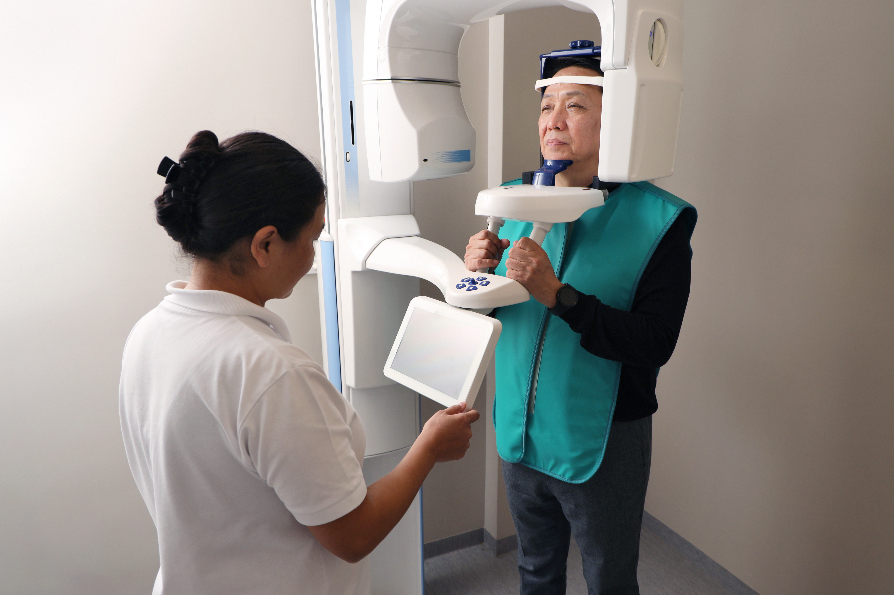
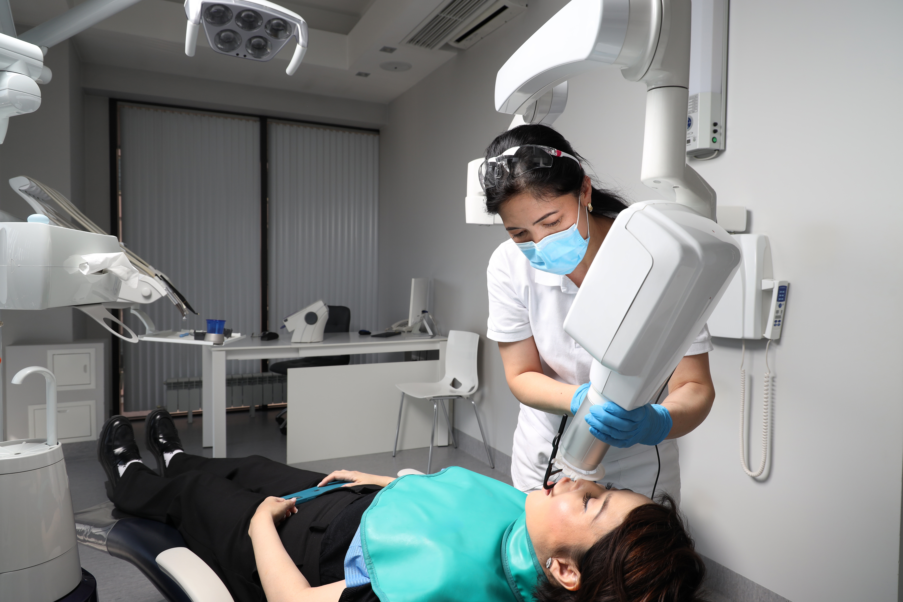
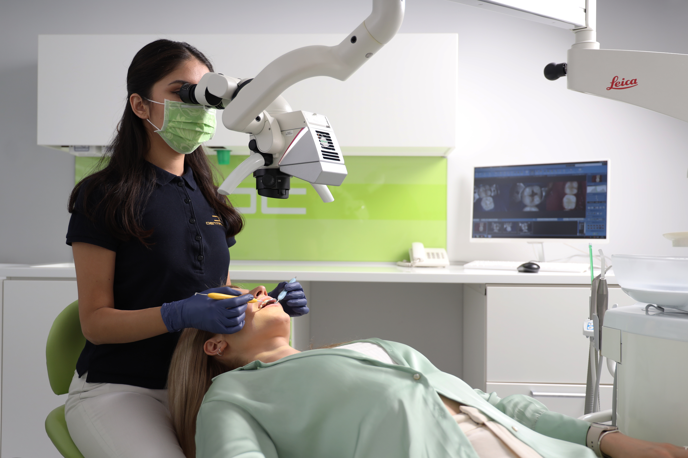
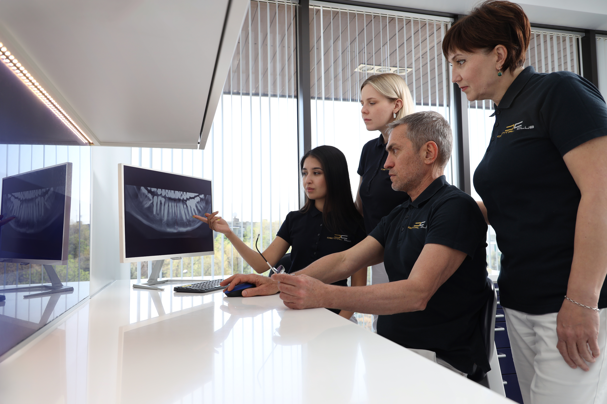

ДИАГНОСТИКА

Диагностика необходима для составления качественного плана лечения, гарантирующего результат. Только профессионально организованный комплекс мероприятий может помочь грамотному специалисту поставить правильный диагноз и провести адекватное лечение.

Dental Club производит 3D-диагностику на оборудовании последнего поколения.
Компьютерный томограф Planmeca ProMax 3DMid – является одним из лучших в мире диагностических аппаратов.
ProMax 3DMid– это гарант безопасности. Уровень облучения при обследовании не превышает уровня облучения после короткого воздушного перелёта. Благодаря возможностям данного аппарата можно создавать виртуальную модель ваших зубов и костной ткани.
DiagnoCam (KaVo, Германия)– второй инструмент в Dental Club, применяемый для выявления мельчайших дефектов и скрытых кариозных полостей. DiagnoCam использует лазерную систему диагностики, без облучения. Весь процесс диагностики пациент может наблюдать на мониторе.


Специалисты Dental Club всегда производят обследования с применением специальных оптических увеличителей: Дентальный микроскоп Leica и бинокуляры Carl Zeiss. Точность диагноза пропорциональна коэффициенту увеличения данных приборов – в десятки раз точнее, чем при простом осмотре.
Наша команда – профессионалы, которые ежегодно совершенствуют свои знания в ведущих медицинских учреждениях Европы.
У нас своя электронная картотека, позволяющая отследить все этапы лечения наших пациентов.
Этапы
- Анкетирование и опрос.
- Осмотр пациента в удобном кресле, с применением бинокуляров Carl Zeiss или микроскопа Leica.
- При необходимости визуализация скрытых полостей и микродефектов зубов при помощи DiagnoCam.
- 3D цифровая диагностика, с огромным функционалом: от локальных участков зубов, суставов и челюстей, до всех костных тканей головы.
- Обсуждение результатов с пациентом и совместное планирование лечения.

